Table of Contents
3. Longest substring without repeating characters
4. Median of two sorted arrays
5. Longest Palindromic Substring
17. Letter Combination of a Phone Number
19. Remove Nth node from the end of list
26. Remove Duplicates from Sorted Array
30. Substring with Concatenation of All words
33. Search in Rotated Sorted Array
34. Find First and Last Position of Element in Sorted Array
160. Intersection of Two Linked Lists
698. Partition to K Equal Sum Subsets
828. Count Unique Characters of All Substrings of a Given String
847. Shortest Path Visiting All Nodes
857. Minimum Cost to Hire K Workers
996. Number of Squareful Arrays
Check if a given array can represent Preorder Traversal of Binary Search Tree
Traverse a Binary Tree with Iterative and Recursion ways
Cost Function (hypothesis – real value)
1. Two sum
因为只有一个solution(pair)，所以一旦发现解返回即可。使用unordered_map或者unordered_set存当前数字，找complement.
2. Add two number
双指针，使用dummy作为返回链表。
3. Longest substring without repeating characters
使用一个unordered_map存current char -> last appearred index，每次只要查看当前和上次出现的差值即是最长non repeating window
4. Median of two sorted arrays
类似merge sort，要用一个trick: ((m+n+1)/2 +(m+n+2)/2)/2=median，转化成分别找两次top k(log n)
5. Longest Palindromic Substring (2d dp)
方法1：每次从中间往外expand，分情况讨论：偶数个和奇数个，最后找最大
方法2：dp[i][j]表示s[i]~s[j]是回文，dp[i][i]=true，if 相邻: dp[j][i]=true if s[i]==s[j] else false，else dp[i][j]=dp[i-1][j+1] && s[i] == s[j]（之前的都相同，同时当前的也相同）
int n = s.size(), left = 0, len = 1;
if (n < 2)
return s;
bool dp[n][n];
memset(dp, false, sizeof dp);
for (int i = 0; i < n; ++i) {
dp[i][i] = true;
for (int j = 0; j < i; ++j) {
dp[j][i] = (s[i] == s[j] && (i - j < 2 || dp[j + 1][i - 1]));
if (dp[j][i] && len < i - j + 1) { // compare with global length
len = i - j + 1;
left = j;
}
}
}
return s.substr(left, len);
6. ZigZag Conversion
用vector<string>表示整个matrix，每次先从上往下扫（每次扫到某行就往后添加）添加竖直列，然后再从下往上添加斜边（范围从倒数第二个到正数第二个），以此类推
复制代码
class Solution {
public:
string convert(string s, int numRows) {
if (numRows <= 1) return s;
string res;
int i = 0, n = s.size();
vector<string> vec(numRows);
while (i < n) {
for (int pos = 0; pos < numRows && i < n; ++pos) {
vec[pos] += s[i++];
}
for (int pos = numRows - 2; pos >= 1 && i < n; --pos) {
vec[pos] += s[i++];
}
}
for (auto &a : vec) res += a;
return res;
}
};
复制代码
7. Reverse Integer
每次res = num % 10 + res * 10, num /= 10. 注意越界问题
8. String to Integer
1.若字符串开头是空格，则跳过所有空格，到第一个非空格字符，如果没有，则返回0.
2. 若第一个非空格字符是符号 +/-，则标记 sign 的真假，这道题还有个局限性，那就是在 c++ 里面，+-1 和-+1 都是认可的，都是 -1，而在此题里，则会返回0.
3.若下一个字符不是数字，则返回0，完全不考虑小数点和自然数的情况，不过这样也好，起码省事了不少。
4.如果下一个字符是数字，则转为整形存下来，若接下来再有非数字出现，则返回目前的结果。
5. 还需要考虑边界问题，如果超过了整型数的范围，则用边界值替代当前值。
-- https://www.cnblogs.com/grandyang/p/4125537.html
9. Palindrome Number
使用第7题的方法反转数字，然后和原数字比较，corner case:如果是奇数位，那么比较reversed number / 10 ?= num.
10. Regular Expression Match
'.' Matches any single character. '*' Matches zero or more of the preceding element.
递归：
使用递归查询两个字符的第一个char是否match，直到遇到第二个字符是*的情况，之后再处理重复*
1. s和跳过*之后的p是否match
2. s去掉第一个char之后时候和跳过*之后的p是否match
每次循环都会跳过第一个，这个while loop最终会在s跳光或者第一个s[0]!=p[0]中结束，最后只要再查一遍当前s和剩下的p是否match就可以了
1 while (!s.empty() && (s[0] == p[0] || p[0] == '.')) {
2 if (isMatch(s, p.substr(2))) return true;
3 s = s.substr(1);
4 }
5 return isMatch(s, p.substr(2));
dp[i][j] = 从0-i的s和0-j的pattern是否match，最后返回dp[i][j]
初始化：
1. p为空，s不为空=所有的都不匹配：没有任何pattern
2. s为空，p不为空，那么只有#*#*#*…这种pattern才可以匹配
11. Container with Most Water
使用双指针i和j，分别指向数组的两端。每次最大值是res = max(res, (j - i) * min(height[j], height[i]))。每次根据比较height[i]和height[j]的大小来更新i和j。
只有下一个height[i] or height[j]比当前的最大值要大才考虑更新下一个。
12. Integer to Roman
这道题只能硬做，算是一道实现题
复制代码
1 string intToRoman(int num) {
2 string res = "";
3 vector<int> val{1000, 900, 500, 400, 100, 90, 50, 40, 10, 9, 5, 4, 1};
4 vector<string> str{"M", "CM", "D", "CD", "C", "XC", "L", "XL", "X", "IX", "V", "IV", "I"};
5 for (int i = 0; i < val.size(); ++i) {
6 while (num >= val[i]) {
7 num -= val[i];
8 res += str[i];
9 }
10 }
11 return res;
12 }
复制代码
13. Roman to Integer
同上
复制代码
1 int romanToInt(string s) {
2 int res = 0;
3 unordered_map<char, int> m{{'I', 1}, {'V', 5}, {'X', 10}, {'L', 50}, {'C', 100}, {'D', 500}, {'M', 1000}};
4 for (int i = 0; i < s.size(); ++i) {
5 int val = m[s[i]];
6 if (i == s.size() - 1 || m[s[i+1]] <= m[s[i]]) res += val;
7 else res -= val;
8 }
9 return res;
10 }
复制代码
14. Longest Common Prefix
如果是common prefix那么每一个string都会有，那么只要拿第一个做比对就可以。两个指针i:当前share的prefix的char的index，j:指向后面某一个string的index
15. 3Sum
使用双指针找当前元素的complement，但是使用的前提是数组要排好序。
while (current int)
while (left < right)
find sum such that [left] + [right] == target - int
if sum > target then right--
else left++
细节处理：跳过相同元素，因为最后需要返回的是所有组成方案
16. 3Sum Closest
依旧使用双指针，只不过加入一个新的diff变量
while (current int)
while (left < right)
diff = min(diff, target - current int - [left] + [right])
if sum > targe then right--
else left++
return diff
17. Letter Combination of a Phone Number
首先使用map存每个数字可以对应的字母，然后dfs每次遍历当前节点的状态
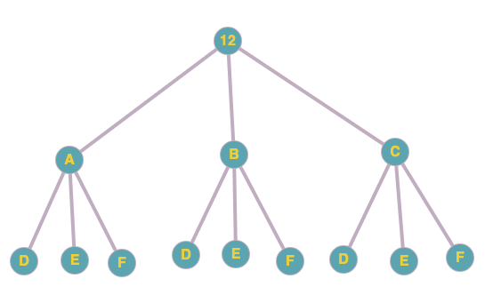
dfs函数：dfs(current index of 12, current node)
18. 4Sum
类似3Sum，只不过要在外围加一层遍历第二个元素，最后继续使用双指针找当前两个元素的complement，但是使用的前提是数组要排好序。
while (current first int)
while (current second int)
while (left < right)
find sum such that [left] + [right] + first + second== target - int
if sum > target then right--
else left++
19. Remove Nth node from the end of list
因为是单指针，所以要想remove需要找到当前的下一个和上一个元素，然后把两者相连即可。
使用快慢指针找当前节点的上n个元素。快节点要比慢几点快n个节点，那么当快节点到达队尾的时候慢节点刚好是第n个节点，这个时候慢节点的下下一个与慢节点相连接即可。
20. Valid Parentheses
使用stack来存当前的字符，使用map存opening -> closing char.
只要是key（是opening char）那么就push到stack中
else判断stack是否为空或者当前的top和当前的char不对应，返回false
其余情况说明当前的char和上一个match，那么直接pop掉上一个即可
最后如果stack是空即说明是valid
stack最后只存还未被match的opening char
21. Merge Two Sorted Lists
使用双指针，同时建立一个dummy pointer，每次比较然后更新dummy pointer
22. Generate Parentheses
因为有n个pair，所以最后的string一定是2n的长度。递归的终止条件便是当前form的。如果当前的括号是valid的，首先open parentheses 的数量要小于总共的n的数量。同时close parentheses一定要小于等于open parentheses的数量。注意顺序不能变，否则即使是valid但是括号的数量会大于2n。每次的iteration是：
open: 0, close: 0
( open: 1, close: 0
(( open: 2, close: 0
((( open: 3, close: 0
((() open: 3, close: 1
((()) open: 3, close: 2
(() open: 2, close: 1
(()( open: 3, close: 1
(()() open: 3, close: 2
(()) open: 2, close: 2
(())( open: 3, close: 2
() open: 1, close: 1
()( open: 2, close: 1
()(( open: 3, close: 1
()(() open: 3, close: 2
()() open: 2, close: 2
()()( open: 3, close: 2
23. Merge k Sorted Lists
使用priority queue动态得到当前的最小值的节点。
因为每个list都是从小到大排列好的，所以每次当前层的所有第一个节点中一定有一个节点是比当前最小的节点的第一个大的节点。比如：
1, 3, 5
2, 4, 6
4, 4, 6
当前层是1, 2, 4，因为1在这一层中是最小，所以选择1，相对应的第一个list就变成3, 5（去掉1之后）。然后继续比较第二层的最小值：3, 2, 4，最小值是2，所以当前的return list 变成1, 2.然后第二个list变成4, 6.以此类推。
最快找到当前层的最小值的方法是用priority queue，每次更新把新的下一层的一个节点push到priority queue中（log k）然后再pop top (log k)。这个操作一共需要做n次，所以总共的时间复杂度是n * 2 * log k.
Code snippet for comparator:
auto cmp = [](const ListNode* left, const ListNode* right) {
return (left -> val) > (right -> val);
};
priority_queue<ListNode*, vector<ListNode*>, decltype(cmp)> pq(cmp);
24. Swap Nodes in Pairs
使用dummy和一个节点进行记录即可
Init:
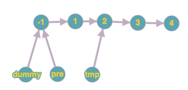
Swap 1和2:
1. 1指向3: pre -> next -> next = tmp -> next
2. 2指向1: tmp -> next = pre -> next
3. -1(pre)指向2: pre -> next = tmp
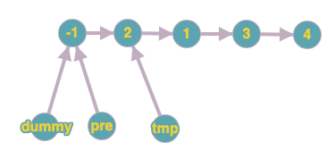
更新pre到下一个需要swap的前一个位置：
pre = pre -> next -> next OR pre = tmp -> next

25. Reverse Nodes in k-group
ListNode* method1(ListNode* head, int k)
{
if (!head || k == 1)
return head;
ListNode *dummy = new ListNode(-1), *pre = dummy, *curr = head;
dummy->next = head;
for (int i = 1; curr; ++i) {
if (i % k == 0) {
pre = reverseOneGroup(pre, curr->next);
curr = pre->next;
} else {
curr = curr->next;
}
}
return dummy->next;
}
ListNode* reverseOneGroup(ListNode* pre, ListNode* next)
{
ListNode *last = pre->next, *curr = last->next;
while (curr != next) {
last->next = curr->next;
curr->next = pre->next;
pre->next = curr;
curr = last->next;
}
return last;
}
Init, now assume k = 2:
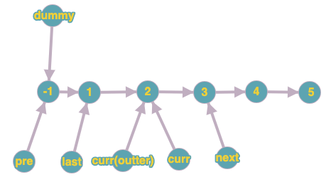
Swap 1 and 2:
last->next = curr->next;
curr->next = pre->next;
pre->next = curr;
curr = last->next;
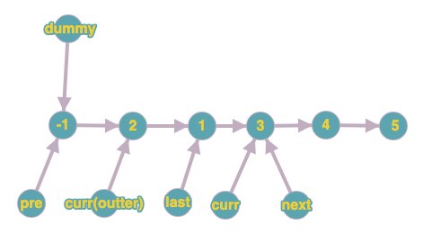
Pre now becomes last:
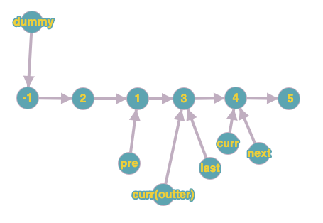
For every other iteration, it swaps everything in between pre -> next to curr (outter). Will stop until curr(outter) reaches to the end. Need to keep the nodes between pre and curr = k, so there is else state for updating curr(outter).
26. Remove Duplicates from Sorted Array
类似滑动窗口。用一个non duplicate index指针来过滤掉重复的数字，然后每次遇到与下一个有重复的数字便while loop一直跳过（因为是排好序的），直到找到下一个不是重复的位置。
27. Remove Element
和26很相似，但是只需要过滤掉所有不是当前数字的数字就可以了，用一个if判断即可。
28. Implement strStr()
这里用一个不等式技巧：
如果i <= m – n, j < n那么i + j < n
这里m表示haystack的size，n表示needle的size
I表示开始match的index（haystack中的）
J表示最终结束match的最后一个index，如果j到了needle的最后一个index，那么说明全部的needle都在haystack中存在，直接返回的当前的i即可。
如果不match那么直接跳过继续找下一个位置即可。这样做的时间复杂度是O(m+n)
29. Divide Two Integers
数学+实践题，需要准备各种error case
int divide(int dividend, int divisor) {
if (dividend == INT_MIN && divisor == -1)
return INT_MAX;
// long abs
long dvd = labs(dividend), dvs = labs(divisor), ans = 0; // 防止越界，所以要先零时转化为long
// positive only if same sign or negative
int sign = (dividend > 0) ^ (divisor > 0) ? -1 : 1; // xor 的作用是如果相同则返回false，如果不同返回true
while (dvd >= dvs) {
long temp = dvs, m = 1;
// div by 2 or shift to left by one
while (temp << 1 <= dvd) { //与其每次只减少一次，可以每次减少2 * previous divisor，其实这是应用二进制的计算方法
temp <<= 1;
// times 2
m <<= 1;
}
dvd -= temp;
ans += m;
}
return sign * ans;
}
e.g.
dividend: 10
divisor: 3
10 – 3 * 3 = 1 -> result += 3
1 < 3 -> so end and return 3
dividend: 20
divisor: 3
20 – 3 * 6 = 2
2 < 3
result = 6
dividend: m
divisor: n
m = n * 1 + n * 2 + n
30. Substring with Concatenation of All words
使用两个map，第一个map存每个word的出现频率，第二个在每次第i个位置查找的时候已经见过的word的频率，如果当前的位置的word的频率比总共的频率还要高，那么说明此区间已经invalid了。
for 所有的起始点-结尾：
for 所有的被选入的起始点-结尾：
更新seen map
31. Next Permutation
next permutation的定义是比当前第一个大的sequence，所有只要找从右往左第一个递减的数字，同时往右找到第一个比当前大的数字，与这个数字swap，最后reverse
e.g.
1,2,10,7,8,9,6
1. 找到第一个递减：8 < 9 -> pivot = 8
2. 从右找第一个8大的数字：9
3. 与8 swap：1,2,10,7,9,8,6 (9开始最大的数字)
4. reverse: 1,2,10,7,9,6,8（9开始最小的数字）
void nextPermutation(vector<int>& nums) {
int pivot = -1, next_small = 0, n = (int) nums.size();
// first decreasing number from right to left
for (int i = n - 1; i > 0; --i) {
if (nums[i] > nums[i - 1]) {
pivot = i - 1;
break;
}
}
// if already in reversed order (bigger -> smaller: left -> right)
if (pivot == -1) {
reverse(nums.begin(), nums.end());
return;
}
// find the next element that is larger than pivot
for (int i = n - 1; i > pivot; --i) {
if (nums[i] > nums[pivot]) {
next_small = i;
break;
}
}
// pick it to the front, and make the remaining sequence to be increasing order
// so that it is always the smallest sequence
swap(nums[pivot], nums[next_small]);
reverse(nums.begin() + pivot + 1, nums.end());
}
32. Longest Valid Parentheses
因为要知道最大的长度，所有不能在stack上存当前的element，而是index，用一个全局res来每次更新当前最长的valid parentheses即可
33. Search in Rotated Sorted Array
这道题两种解法，第一种是先使用二分找到pivot，然后使用这个offset来找下target的位置。第二种方法是直接找:
int l = 0, r = nums.size() - 1;
while (l <= r) {
int m = l + 0ll + r >> 1; //转化成long再转化成int
if (nums[m] == target)
return m;
if (nums[m] < nums[r]) { // m -> r is in increasing order
if (nums[m] < target && target <= nums[r]) // m -> target -> r
l = m + 1;
else // target -> m -> r
r = m - 1;
} else { // l -> m is in increasing order
if (nums[l] <= target && target < nums[m]) // l -> target -> m
r = m - 1;
else // l -> m -> target
l = m + 1;
}
}
return -1;
通过判断两边的大小即可知道中间是否有pivot
1. 右侧升序并且在区间内，那么更新left，或者right
2. 左侧升序并且在区间内，那么更新right，或者left
34. Find First and Last Position of Element in Sorted Array
使用两次二分法来找，第一次找最左边，第二次通过第一次的left来找最右边。
第一次找第一个不同的元素（小于target的第一个），所以
if (nums[mid] < target) left = mid + 1;
第二次是找最后一个相同元素中找，所以
if (nums[mid] <= target) left = mid + 1;
35. Search Insert Position
使用经典二分即可，注意返回的是元素的index不是元素本身
36. Valid Sudoku
每一行，每一列，每一个box都要保证没有重复。
所有的情况都用string来存储：
1. number + “ in row” + row index
2. number + “ in column” + column index
3. number + “ in block “ + block row + “ – “ + block column
为了得到block row和block column，可以用数学公式：
for i from 0 to n:
for j from 0 to n:
block row = i / 3
block column = j / 3
|
|
|
|
|
|
|
|
|
|
|
|
0,0 |
|
|
0,1 |
|
|
0,2 |
|
|
|
|
|
|
|
|
|
|
|
|
|
|
|
|
|
|
|
|
|
|
|
1,0 |
|
|
1,1 |
|
|
1,2 |
|
|
|
|
|
|
|
|
|
|
|
|
|
|
|
|
|
|
|
|
|
|
|
2,0 |
|
|
2,1 |
|
|
2,2 |
|
|
|
|
|
|
|
|
|
|
|
|
0,0 |
0,1 |
0,2 |
0,3 |
0,4 |
0,5 |
0,6 |
0,7 |
0,8 |
|
1,0 |
0,0 (1,1) |
1,2 |
1,3 |
0,1 (1,4) |
1,5 |
1,6 |
0,2 (1,7) |
1,8 |
|
2,0 |
2,1 |
2,2 |
2,3 |
2,4 |
2,5 |
2,6 |
2,7 |
2,8 |
|
|
|
|
|
|
|
|
|
|
|
|
1,0 |
|
|
1,1 |
|
|
1,2 |
|
|
|
|
|
|
|
|
|
|
|
|
|
|
|
|
|
|
|
|
|
|
|
2,0 |
|
|
2,1 |
|
|
2,2 |
|
|
|
|
|
|
|
|
|
|
|
37. Sudoku Solver
难点是找同一个block中是否有重复数字：
for (unsigned i = 0; i < 9; ++i) {
// check duplicate of row
if (board[i][col] == c) return false;
// check duplicate of col
if (board[row][i] == c) return false;
if (board[3 * (row / 3) + i / 3][3 * (col / 3) + i % 3] == c)
return false;
}


41. First Missing Positive
把每个数字都放在正确的位置：A[i] = i + 1
假如当前位置的数字<0或者>size of A，那么直接ignore它，它的位置可能会被正确的数字所取代。最后从左往右第一个不同的数字即是答案。
while(A[i] > 0 && A[i] <= n && A[A[i]
- 1] != A[i])
swap(A[i], A[A[i] - 1]);
0, 1, 2, 3, 4, 5, 6
i = 0, 1
1, 2, 4, 6, 3, 7, -1
i = 2
1, 2, 6, 4, 3, 7, -1
1, 2, 7, 4, 3, 6, -1
1, 2, -1, 4, 3, 6, 7
i = 3, 4, 5, 6
1, 2, -1, 4, 3, 6, 7
78. Subsets
求所有的combination，使用位操作来达到空间复杂度为1
1. 如果有n个数字，那么可以有2^n个选择方法（每个数字都不同），那么如果要遍历所有情况，需要用1 << n个state（map）
2. 然后遍历每个数字，如果当前位是1，那么放到需要返回的数组中，如果是0，则不选。
总时间复杂度是:2^n * n
85. Maximal Rectangle
160. Intersection of Two Linked Lists
使用环的思路去做：
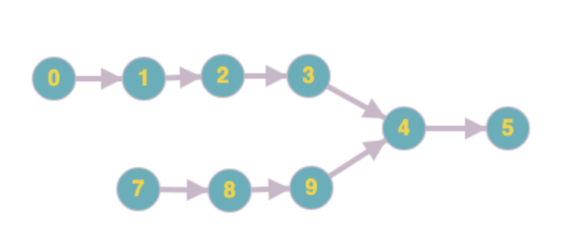
|
iteration |
a |
b |
|
0 |
0 |
7 |
|
1 |
1 |
8 |
|
2 |
2 |
9 |
|
3 |
3 |
4 |
|
4 |
4 |
5 |
|
5 |
5 |
0（从a的头开始遍历） |
|
6 |
7（从b的头开始遍历） |
1 |
|
7 |
8 |
2 |
|
8 |
9 |
3 |
|
9 |
4 |
4 |
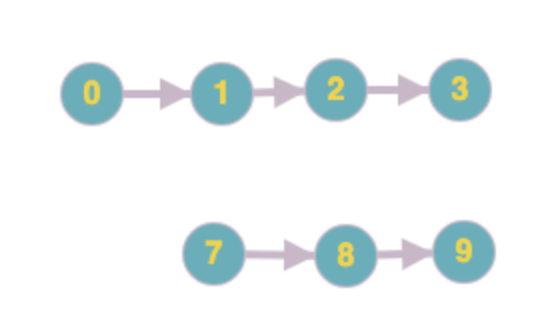
|
iteration |
a |
b |
|
0 |
0 |
7 |
|
1 |
1 |
8 |
|
2 |
2 |
9 |
|
3 |
3 |
0 |
|
4 |
7 |
1 |
|
5 |
8 |
2 |
|
6 |
9 |
3 |
|
7 |
0 (同时为null) |
7（同时为null） |
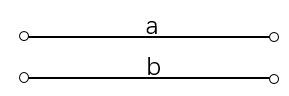总步数为2*（a+b）
 总步数为2*(a + b + c)
总步数为2*(a + b + c)
169. Majority Element
使用摩尔投票：https://en.wikipedia.org/wiki/Boyer%E2%80%93Moore_majority_vote_algorithm
需要使用两个variable：当前的candidate和当前candidate的出现次数
assume过半数的这个值一定存在
如果cnt == 0，那么所有当前的元素都不可能为出现次数过半的元素，candidate = 当前值
[1, 2, 1, 1, 1, 2, 3, 3, 3, 2, 2, 2, 2, 2]
[0, 1, 2, 3, 4, 5, 6, 7, 8, 9, 10,11,12,13]
|
iteration (index) |
candidate |
cnt |
|
0 |
1 |
1 |
|
1 |
1 |
0 |
|
2 |
1（重新=1） |
1 |
|
3 |
1 |
2 |
|
4 |
1 |
3 |
|
5 |
1 |
2 (是1的概率减少了，这里只需要考虑是否是1即可) |
|
6 |
1 |
1 |
|
7 |
1 |
0 |
|
8 |
3 (cnt==0) |
1 |
|
9 |
3 |
0 |
|
10 |
2 |
1 |
|
11 |
2 |
2 |
|
12 |
2 |
3 |
|
13 |
2 |
4 |
for n in nums:
if cnt == 0:
cnt = 1
cand = n
else if cand == n:
cnt ++
else
cnt --
return cand
210. Course Schedule II
参见269的topological sort的过程进行bfs搜索下一个课程，然后返回最终的次序。这道题图已经建好，所以不用考虑建图的问题。
229. Majority Element II
如果超过n/3，那么只有可能有两个数字：
x * n / 3 < n -> x < 3
vector<int> res;
int a = 0, b = 0, cnt1 = 0, cnt2 = 0, n = nums.size();
for (int num : nums) {
if (num == a) ++cnt1;
else if (num == b) ++cnt2;
else if (cnt1 == 0) { a = num; cnt1 = 1; }
else if (cnt2 == 0) { b = num; cnt2 = 1; }
else { --cnt1; --cnt2; }
}//验证是否存在，计算每个的值的出现频率是否过n/3
cnt1 = cnt2 = 0;
for (int num : nums) {
if (num == a) ++cnt1;
else if (num == b) ++cnt2;
}if (cnt1 > n / 3) res.push_back(a);
if (cnt2 > n / 3) res.push_back(b);
return res;
252. Meeting Rooms
首先按照start来排序（从小到大），如果无法参加，那么说明有两个interval有intersection。
if (intervals[i][0] < intervals[i - 1][1])
return false;
261. Graph Valid Tree
要是树的话需要满足两个条件：
1. 连通（每个点都可以reach到任意其他点）
2. 没有环（dfs之后所有点都访问过，且不重复）
253. Meeting Rooms II
需要返回最少需要的房间数，那么就是找安排之后在同一时间最少的intersection数。
可以使用priorityqueue根据start的倒叙方式排序（每次top存储的是最早开始的interval）。pq中存储的是当前所有在某个时间段有conflict的interval的end，所以如果想知道要不要继续分配新的房间只需要查看当前新的interval的start是否比当前的top的end要大，如果要小那么说明需要一个新的room，则添加当前的新的interval到这个pq中。如果start>=top.end那么说明可以少一个房间，则更新目前的最晚时间到新添加的这个时间的end（因为当前的start已经比top.end要靠后，所以end也一定会比之前的end要靠后）。
sort(intervals.begin(), intervals.end(),
[](const vector<int>& a, const vector<int>& b) { return a[0] < b[0]; }); //lambda expression
priority_queue<int, vector<int>, greater<int>> q;
for (auto interval : intervals) {
if (!q.empty() && q.top() <= interval[0])
q.pop();
q.push(interval[1]);
}
return q.size();
269. Alien Dictionary
Topological sort: similar with course schedule series
e.g. [ "wrt", "wrf", "er", "ett", "rftt" ]
1. wrt -> wrf: t -> f
2. wrt -> er: w -> e
3. er -> ett: r -> t
4. ett -> rftt: e -> r
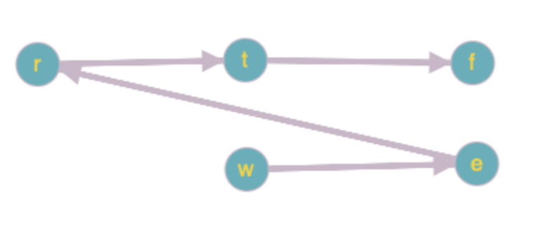
e.g. [ "z", "x", "z" ] : 有环 -> invalid
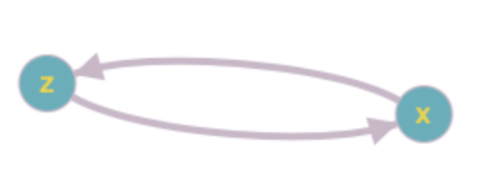
topological sort:
1. 建图（child -> parent）
2. 计算in degree，找出in degree是0的所有节点：这些节点为起始点，需要加入到queue中
3. BFS：每次遍历当前起始点的所有outter nodes（如果把当前节点加入到已访问的 path中，那么它的parent的in degree就要相应-1），如果当前parent的in degree更新之后是0，那么说明当前parent可以加入的队列中继续遍历，同时它也是当前的下一个顺序。
398. Random Pick Index
水池抽样: https://www.jianshu.com/p/7a9ea6ece2af
528. Random Pick with Weight
random%num代表在0-num-1中等概率得到任意一个整数，可以把模拟到当前的数组：
[1,2,3,4] -> [1,3,6,10]，如果随机数random % 10 ==
[0] -> choose 1
[1,2] -> choose 3
[3,4,5] -> choose 6
[6,7,8,9] -> choose 10
这里可以用二分搜索来进行：[mid] <= random%10 -> left = mid + 1
698. Partition to K Equal Sum Subsets
使用简单粗暴的dfs来做这道题：
bool dfs(nums, target sum, current sum, remaining parts (k), current index)
if k == 1:
return true;
if target sum == current sum:
return dfs(nums, target sum, 0, k – 1, index + 1)
for (; index < size of nums; ++index)
if (!visited[index])
visited[index] = true;
if (dfs(nums, target sum, current sum + nums[index], k, index)
return true;
visited[index] = false;
return false;
706. Design HashMap
实现以下function：
- put(key, value) : Insert a (key, value) pair into the HashMap. If the value already exists in the HashMap, update the value.
- get(key): Returns the value to which the specified key is mapped, or -1 if this map contains no mapping for the key.
- remove(key) : Remove the mapping for the value key if this map contains the mapping for the key.
1. 哈希函数：10^9 映射到10^5的方法
a. e.g. x % 10^5 -> 所有结果都在10^5的范围内
2. 冲突(collision)：两个（或多个）不一样的数字映射到同一个数字
a. Chaining: 每一条链的长度在平均情况下可以看作是常数O(1)
|
Table Size = 5, Hash Function = x % 5 |
||||
|
0 |
1 |
2 |
3 |
4 |
|
11 |
14 |
|||
|
21 |
||||
b. Open Addressing:
|
Table Size = 10, Hash Function = x % 10 |
||||||||||
|
0 |
1 |
2 |
3 |
4 |
5 |
6 |
7 |
8 |
9 |
10 |
|
1 |
3 |
6 |
||||||||
|
11 |
13 |
23 |
16 |
|||||||
3. 删除：使用一个bool变量来说明当前元素是否存在，并不用真正删除
Chaining:
const int N = 100003;
int h[N], e[N], ne[N], exist[N], idx;
void insert(int x)
{
int k = (x % N + N) % N; // make sure the remainder is >0
e[idx] = x, ne[idx] = h[k], exist[idx] = 1, h[k] = idx++;
}
bool find(int x)
{
int k = (x % N + N) % N; // make sure the remainder is >0
for (int i = h[k]; i != -1; i = ne[i]) {
if (e[i] == x && exist[i])
return true;
}
return false;
}
void remove(int x)
{
int k = (x % N + N) % N; // make sure the remainder is > 0
for (int i = h[k]; i != -1; i = ne[i]) {
if (e[i] == x)
exist[i] = 0;
}
}
773. Sliding Puzzle
同样是图的搜索的，要使用bfs（最短路线）。难点在于表示每个state。可以使用一个string来表示：
target: “123450”
如果想要遍历下一个state，那么在知道当前state的前提下需要知道0的位置。
如果0的位置在”xxxxxx”中的第0位，那么它可以挪动的方向是:”13”
012
345
因为根据上述的表示方法，0的右边是1，下面是3，没有其他别的位置可以继续挪动了
828. Count Unique Characters of All Substrings of a Given String
Intuition
Let's think about how a character can be found as a unique character.
Think about
string "XAXAXXAX" and focus on making the second "A" a unique character.
We can take "XA(XAXX)AX" and between "()" is our substring.
We can see here, to make the second "A" counted as a unique
character, we need to:
insert "(" somewhere between the first and
second A
insert ")" somewhere between the second and
third A
For step 1 we
have "A(XA" and "AX(A", 2 possibility.
For step 2 we have "A)XXA", "AX)XA" and "AXX)A", 3 possibilities.
So there are in
total 2 * 3 = 6 ways
to make the second A a
unique character in a substring.
In other words, there are only 6 substring, in which this A contribute 1 point as unique
string.
Instead of counting all unique characters and struggling with all
possible substrings,
we can count for every char in S, how many ways to be found as a unique char.
We count and sum, and it will be out answer.
Explanation
index[26][2] record last two occurrence index for every upper
characters.
Initialise all
values in index to -1.
Loop on string
S, for every character c, update its last two occurrence index to index[c].
Count when loop. For example, if "A" appears twice at index 3, 6, 9 seperately, we need to count:
For the first "A": (6-3) * (3-(-1))"
For the second "A": (9-6) * (6-3)"
For the third
"A": (N-9) * (9-6)"
Complexity
One pass, time
complexity O(N).
Space complexity O(1).
C++:
int uniqueLetterString(string S) {
int index[26][2], res = 0, N = S.length(), mod = pow(10, 9) + 7;
memset(index, -1, sizeof(int) * 52);
for (int i = 0; i < N; ++i) {
int c = S[i] - 'A';
// [0] < [1] < i
res = (res + (i - index[c][1]) * (index[c][1] - index[c][0]) % mod) %
mod;
index[c][0] = index[c][1];
index[c][1] = i;
}
for (int c = 0; c < 26; ++c)
// [0] < [1] < N
res = (res + (N - index[c][1]) * (index[c][1] - index[c][0]) % mod) %
mod;
return res;
}
847. Shortest Path Visiting All Nodes
给定一个图，找出最短的spanning tree：
test: [[1],[0]]
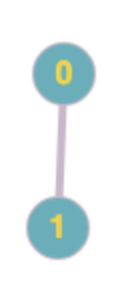
0->1 = 1 cost
其实就是多源节点求最短路径问题，那么就要使用bfs来解决。首先将每个node都放入到 bfs使用的queue中。这里要解决的是如何表示当前节点为起点所表示的path。最简单的表示方法是：
target = 3 = 11 (binary: node 0 and 1 all visited)
queue: visited:
|
(qp) $1 = size=2 { [0] = (first = 1, second = 0) // first: current all visited nodes of current node, second: current node [1] = (first = 2, second = 1) }
(qp) $8 = size=2 { [0] = (first = 3, second = 1) [1] = (first = 3, second = 0) } |
|
(uss) $0 = size=2 { [0] = "2-1" // from node 1, visited node 1 [1] = "1-0" // from node 0, visited node 0 }
(uss) $11 = size=4 { [0] = "3-0" // from node 0, visited all the other nodes [1] = "3-1"// from node 1, visited all the other nodes [2] = "2-1" // from node 1, visited node 1 [3] = "1-0" // from node 0, visited node 0 } |
Step 1: 把当前的status记录到q和visited中
for (int i = 0; i < n; ++i) {
int mask = (1 << i); // i已经visited到了自己，所有path中要包括自己
target |= mask; // so that all the nodes are '1'
visited.insert(to_string(mask) + '-' + to_string(i));
q.push({ mask, i });
}
Step 2: BFS每次取当前队头的所有邻节点，然后遍历当前下一层的所有邻节点，当任何一个队头已经访问了所有的节点的时候，那么返回当前的层数即是最短路径的长度
while (!q.empty()) {
for (int i = q.size(); i > 0; --i) { // 遍历当前层所有节点
auto curr = q.front();
q.pop();
if (curr.first == target) // all are visited
return res;
for (int next : graph[curr.second]) {
int path = curr.first | (1 << next);
string str = to_string(path) + '-' + to_string(next);
if (visited.count(str))
continue;
visited.insert(str);
q.push({ path, next });
}
}
++res; // 第几层
}
857. Minimum Cost to Hire K Workers
按照wage/quality排序，这个ratio代表在同样的工作的quality下需要的最少的工资的人在最前面。当ratio最小，然后按照quality来排序，如果quality越高，但是因为它的ratio最小，所以所有其他人的ratio也用它的ratio来计算总quality，这样所有人的工资就可以最小。
934. Shortest Bridge
首先用dfs对找到的岛屿标记，类似200 number of island，但是在找的时候同时要把所有的位置存入queue中，因为这些点都有可能是下一步bfs的源节点。然后用bfs搜索向四个方向伸展，知道遇到另外一个标记的节点（注意，这里可以是任何一个岛屿，完全根据先找到的是哪个岛屿）。
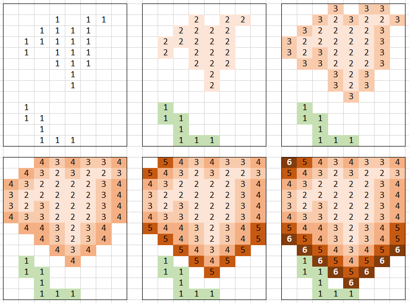
996. Number of Squareful Arrays
类似permutation，但是加了一个条件便是要保证相邻位置的和是square的
int numSquarefulPerms(vector<int>& A) {
sort(A.begin(), A.end()); // 找重复
int ans = 0;
pmt(A, 0, ans);
return ans;
}
void pmt(vector<int> A, int idx, int& ans) {
if (idx >= A.size()) {
++ans;
}
for (int i = idx; i < A.size(); ++i) {
if (i > idx && A[i] == A[idx]) continue; // 去重
swap(A[i], A[idx]);
if ((idx == 0) || (idx > 0 && isSquare(A[idx] + A[idx - 1]))) { //符合条件
pmt(A, idx + 1, ans);
}
}
}
bool isSquare(int v) {
int r = sqrt(v);
return r * r == v;
}
282. 石子合并
#include <iostream>
using namespace std;
const int N = 310;
int n;
int s[N]; // 前缀和
int f[N][N]; //f[l][r]表示从l到r的最小合并数
int main()
{
cin >> n;
for (int i = 1; i <= n; i ++ ) cin >> s[i], s[i] += s[i - 1];
for (int len = 2; len <= n; len ++ )
for (int i = 1; i + len - 1 <= n; i ++ )
{
int j = i + len - 1; //从i-j的区间
f[i][j] = 1e8;
for (int k = i; k < j; k ++ )
f[i][j] = min(f[i][j], f[i][k] + f[k + 1][j] + s[j] - s[i - 1]);
}
cout << f[1][n] << endl;
return 0;
}
作者：yxc
链接：https://www.acwing.com/activity/content/code/content/250070/
来源：AcWing
著作权归作者所有。商业转载请联系作者获得授权，非商业转载请注明出处。
f[i][j] = min(f[i][j], f[i][k] + f[k + 1][j] + s[j] - s[i - 1]);
[i….k….j]在i到j中最小值是从i～k的最小值+ (k+1)～j的最小值+从i到k的值+从k+1到j的值（这个值也就是所有从i到j的值，这一步用前缀合的数组来快速计算。
897. 最长公共子序列
要求：不一定连续，只需要相对顺序一致就算一样
假设a是第一个序列，b是第二个，那么a中一共有2^(a的长度的)子序列，因为当前元素可以既选择留在里面，或者出去。
f[i][j]表示a[1~i]和b[1~j]的公共子序列的最大长度
#include<bits/stdc++.h>
using namespace std;
const int N=1010;
int f[N][N];
char a[N],b[N];
int n,m;
int main(){
cin>>n>>m;
scanf("%s%s",a+1,b+1); //要从1开始读取，因为会用到i-1
for(int i=1;i<=n;i++){
for(int j=1;j<=m;j++){
f[i][j]=max(f[i-1][j],f[i][j-1]);
if(a[i]==b[j]) f[i][j]=max(f[i][j],f[i-1][j-1]+1);
}
}
cout<<f[n][m]<<endl;
}
作者：TaoZex
链接：https://www.acwing.com/solution/acwing/content/3490/
来源：AcWing
著作权归作者所有。商业转载请联系作者获得授权，非商业转载请注明出处。
如果a[i-1]!=b[j-1]，f[i][j]=f[i-1][j-1]，这里的f[i-1][j-1]已经在f[i-1][j]和f[i][j-1]中包含了，所以不需要重新计算。
Valid BST:
Check if a given array can represent Preorder Traversal of Binary Search Tree[1]
// C++ program for an efficient solution to check if
// a given array can represent Preorder traversal of
// a Binary Search Tree
#include<bits/stdc++.h>
using namespace std;
bool canRepresentBST(int pre[], int n)
{
// Create an empty stack
stack<int> s;
// Initialize current root as minimum possible
// value
int root = INT_MIN;
// Traverse given array
for (int i=0; i<n; i++)
{
// If we find a node who is on right side
// and smaller than root, return false
if (pre[i] < root)
return false;
// If pre[i] is in right subtree of stack top,
// Keep removing items smaller than pre[i]
// and make the last removed item as new
// root.
while (!s.empty() && s.top()<pre[i])
{
root = s.top();
s.pop();
}
// At this point either stack is empty or
// pre[i] is smaller than root, push pre[i]
s.push(pre[i]);
}
return true;
}
// Driver program
int main()
{
int pre1[] = {40, 30, 35, 80, 100};
int n = sizeof(pre1)/sizeof(pre1[0]);
canRepresentBST(pre1, n)? cout << "truen":
cout << "falsen"; // true
int pre2[] = {40, 30, 35, 20, 80, 100};
n = sizeof(pre2)/sizeof(pre2[0]);
canRepresentBST(pre2, n)? cout << "truen":
cout << "falsen"; // false
return 0;
}
Traverse a Binary Tree with Iterative and Recursion ways

Depth First Traversals:
(a) Inorder (Left, Root, Right) : 4 2 5 1 3
(b) Preorder (Root, Left, Right) : 1 2 4 5 3
(c) Postorder (Left, Right, Root) : 4 5 2 3 1
Breadth First or Level Order Traversal : 1 2 3 4 5
Pre order: parent –left – right
Iterative:
public List<Integer> preorderTraversal(TreeNode root) {
List<Integer> result = new ArrayList<>();
Deque<TreeNode> stack = new ArrayDeque<>();
TreeNode p = root;
while(!stack.isEmpty() || p != null) {
if(p != null) {
stack.push(p);// keep pushing the left
result.add(p.val); // Add before going to children
p = p.left;
} else {
TreeNode node = stack.pop(); // now get the parent
p = node.right;
}
}
return result;
}
Recursion:
/* Given a binary tree, print its nodes in preorder*/
void printPreorder(struct Node* node)
{
if (node == NULL)
return;
/* first print data of node */
cout << node->data << " ";
/* then recur on left sutree */
printPreorder(node->left);
/* now recur on right subtree */
printPreorder(node->right);
}
In order traverse: left – parent – right
Iterative:
public List<Integer> inorderTraversal(TreeNode root) {
List<Integer> result = new ArrayList<>();
Deque<TreeNode> stack = new ArrayDeque<>();
TreeNode p = root;
while(!stack.isEmpty() || p != null) {
if(p != null) {
stack.push(p);
p = p.left;
} else {
TreeNode node = stack.pop();
result.add(node.val); // Add after all left children
p = node.right;
}
}
return result;
}
Recursion:
/* Given a binary tree, print its nodes in inorder*/
void printInorder(struct Node* node)
{
if (node == NULL)
return;
/* first recur on left child */
printInorder(node->left);
/* then print the data of node */
cout << node->data << " ";
/* now recur on right child */
printInorder(node->right);
}
Post Order: left – right – parent
Iterative:
public List<Integer> postorderTraversal(TreeNode root) {
LinkedList<Integer> result = new LinkedList<>();
Deque<TreeNode> stack = new ArrayDeque<>();
TreeNode p = root;
while(!stack.isEmpty() || p != null) {
if(p != null) {
stack.push(p);
result.addFirst(p.val); // Reverse the process of preorder
p = p.right; // Reverse the process of preorder
} else {
TreeNode node = stack.pop();
p = node.left; // Reverse the process of preorder
}
}
return result;
}
Recursion:
/* Given a binary tree, print its nodes according to the
"bottom-up" postorder traversal. */
void printPostorder(struct Node* node)
{
if (node == NULL)
return;
// first recur on left subtree
printPostorder(node->left);
// then recur on right subtree
printPostorder(node->right);
// now deal with the node
cout << node->data << " ";
}
Machine Learning
Cost Function (hypothesis – real value)
Square Error Function/Mean Square Error
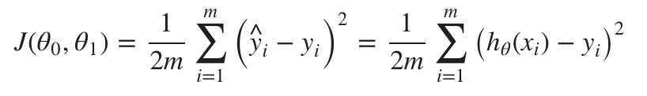
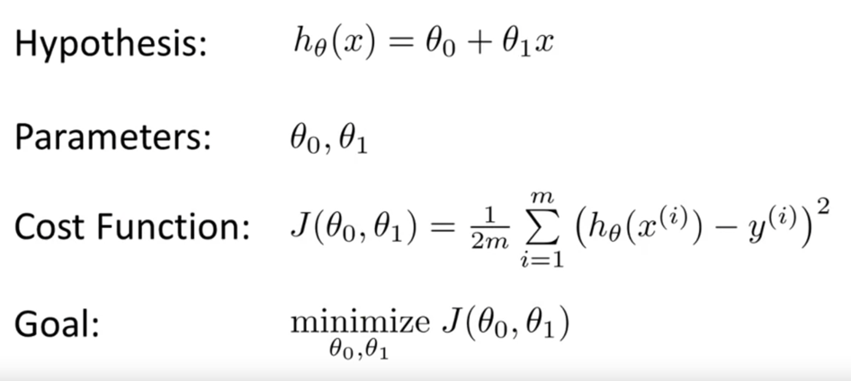
Using Gradient Decent
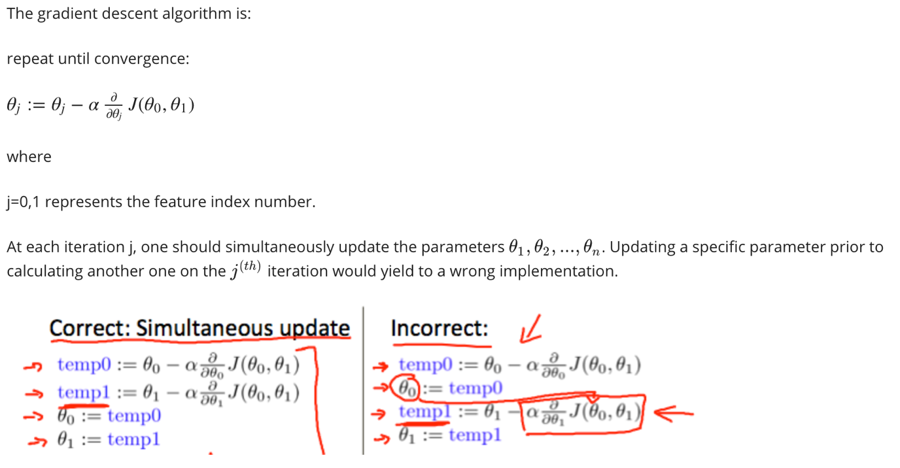
alpha: learning rate (how big each step)
几何题目总结
矢量叉积
计算矢量叉积是与直线和线段相关算法的核心部分。设矢量P = ( x1, y1 )，Q = ( x2, y2 )，则矢量叉积定义为由(0,0)、p1、p2和p1+p2所组成的平行四边形的带符号的面积，即：P × Q = x1*y2 - x2*y1，其结果是一个标量。显然有性质 P × Q = - ( Q × P ) 和 P × ( - Q ) = - ( P × Q )。一般在不加说明的情况下，本文下述算法中所有的点都看作矢量，两点的加减法就是矢量相加减，而点的乘法则看作矢量叉积。
折线段的拐向判断
折线段的拐向判断方法可以直接由矢量叉积的性质推出。对于有公共端点的线段p0p1和p1p2，通过计算(p2 - p0) × (p1 - p0)的符号便可以确定折线段的拐向：
若(p2 - p0) × (p1 - p0) > 0,（面积为正）则p0p1在p1点拐向右侧后得到p1p2。
若(p2 - p0) × (p1 - p0) < 0,（面积为负）则p0p1在p1点拐向左侧后得到p1p2。
若(p2 - p0) × (p1 - p0) = 0,则p0、p1、p2三点共线。
具体情况可参照下图：
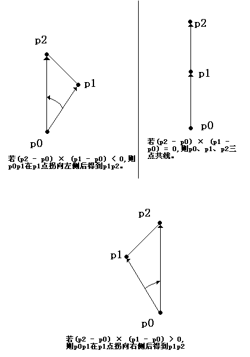
点在线上
1. 组成的平行四边形面积为0: ( Q - P1 ) × ( P2 - P1 ) = 0
2. 在组成的矩形面积内：
ON-SEGMENT(pi,pj,pk)
if min(xi,xj) <= xk <= max(xi,xj) and min(yi,yj) <= yk <= max(yi,yj)
then return true;
else return false;
判断线段和直线是否相交
有了上面的基础，这个算法就很容易了。如果线段P1P2和直线Q1Q2相交，则P1P2跨立Q1Q2，即：( P1 - Q1 ) × ( Q2 - Q1 ) * ( Q2 - Q1 ) × ( P2 - Q1 ) >= 0。
判断矩形是否包含点
只要判断该点的横坐标和纵坐标是否夹在矩形的左右边和上下边之间。
判断线段、折线、多边形是否在矩形中
因为矩形是个凸集，所以只要判断所有端点是否都在矩形中就可以了。
判断矩形是否在矩形中
只要比较左右边界和上下边界就可以了。
判断圆是否在矩形中
很容易证明，圆在矩形中的充要条件是：圆心在矩形中且圆的半径小于等于圆心到矩形四边的距离的最小值。
点在多边形中（包含边）
|
a. 与端点相交，且当前相交点为凸边形的端点，那么只算一次（斜上和斜下都会被记为相交，需要判断两个线段相交的点?=射线穿过的点） b. 不同于a，相交端点为多边形为凹边形，所以直接忽略 c. 如果射线与任何一边相交，那么不计算所有的相交点是凹边的数量，c中的从左向右的第二个相交点是凹端点，所以不被计算。 d. 如果是凸节点，那么+1计算 |
首先从左无限向p点做射线，然后计算有多少个相交点，如果是偶数个，那么说明在外，如果是奇数，那么在内。
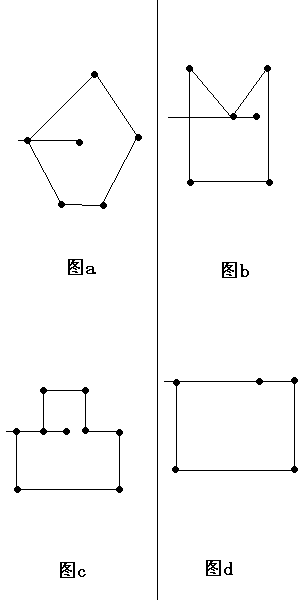
count ← 0;
以P为端点，作从右向左的射线L;
for 多边形的每条边s
do if P在边s上
then return true;
if s不是水平的
then if s的一个端点在L上
if 该端点是s两端点中纵坐标较大的端点（判断是否是凸边形）
then count ← count+1
else if s和L相交
then count ← count+1;
if count mod 2 = 1
then return true;
else return false;
求线段或直线与圆的交点的坐标
设圆心为O，圆半径为r，直线（或线段）L上的两点为P1,P2。
1. 如果L是线段且P1，P2都包含在圆O内，则没有交点；否则进行下一步。
2. 如果L平行于Y轴，
a) 计算圆心到L的距离dis；
b) 如果dis > r 则L和圆没有交点；
c) 利用勾股定理，可以求出两交点坐标，但要注意考虑L和圆的相切情况。
3. 如果L平行于X轴，做法与L平行于Y轴的情况类似；
4. 如果L既不平行X轴也不平行Y轴，可以求出L的斜率K，然后列出L的点斜式方程，和圆方程联立即可求解出L和圆的两个交点；
5. 如果L是线段，对于2，3，4中求出的交点还要分别判断是否属于该线段的范围内。